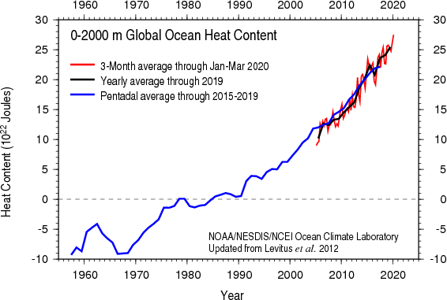
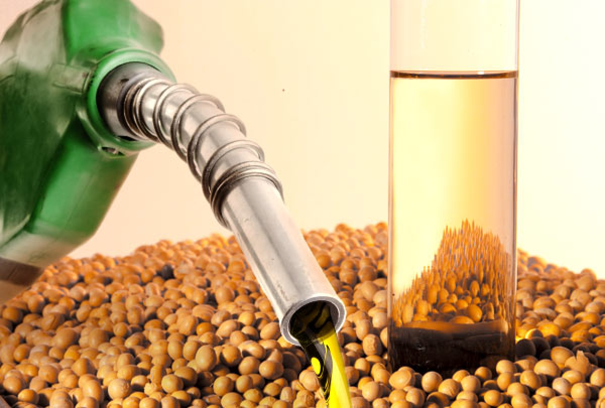

O que é o aquecimento global?
O aquecimento global é basicamente o aumento da temperatura terrestre, geralmente causada pela emissão de gases poluentes na atmosfera.
Temperatura média dos oceanos
O que podemos fazer?
Os principais causadores do aquecimento da atmosfera e dos oceanos é o ser humano, devido à suas tecnologias poluentes que emitem gás carbônico (CO2) a camada de ozonio é destruída, formando um buraco, e assim sucetivel ao Efeito Estufa.
Uma das maneiras para lidar com isto é:
-
Carro Híbrido
Os carros híbridos são uma recente tecnologia que tem o objetivo de substituir o combustível por um biocombustível.
-
Biocombustíveis
Os biocombustíveis são combustíveis de origem biológica não fóssil que não emitem gases carbônicos.
Um deles é o etanol, que pode ser produzido à partir da cana-de-açucar, batata, mandioca, milho, entre outros.
Também é utilizado o biodiesel, que é um combustível renovável obtido a partir de um processo químico denominado transesterificação.
